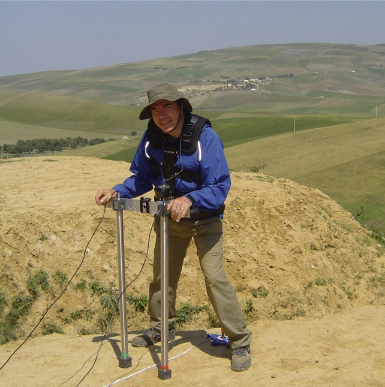

@@include('header.html', {
  "level": "third"
})

@@include('section-tabs.html', {
  "level": "third"
})

<div class='section main_content'>
  <div class="content">
    <section class="single-article">

      <ul class="breadcrumbs">
        <li><a href="../../together-we-rock-vol-1.html">Contents</a><span class="breadcrumbs-arrow">&rsaquo;</span></li>
        <li>06 Gas Sands Morocco</li>
      </ul><!-- /.single-article__breadcrumb -->

      <div class="first-page">
        <h2 class="first-page__title">Gas Sands</h2>
        
      </div><!-- /.first-page -->

      <div class="table-of-contents">
        <div class="single-chapter">
          <h3 class="single-chapter__title">06 Gas Sands Morocco</h3>
          <ul class="single-chapter__links">
            <li><a href="morocco-1.html">6.1 Case Studies – Morocco Gas</a></li>
            <li><a href="morocco-2.html">6.2 Cabre - Jim Ward report on ADR surveys in Morocco</a></li>
          </ul><!-- /.single-chapter__links -->
        </div><!-- /.single-chapter -->
      </div><!-- /.table-of-contents -->

    </section><!-- /.single-article -->
  </div>
</div>

@@include('footer.html')
